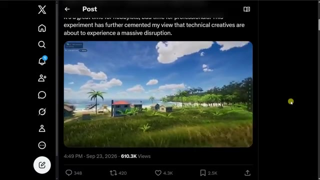
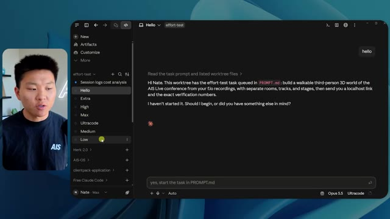
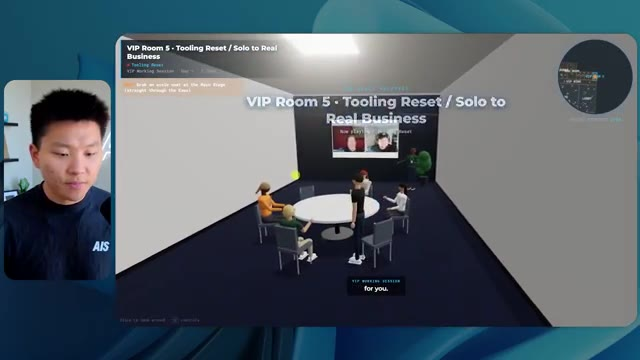
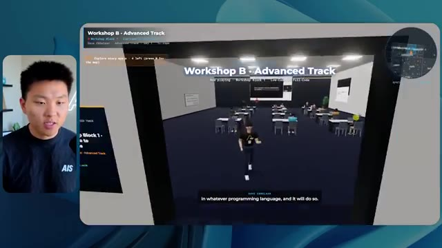
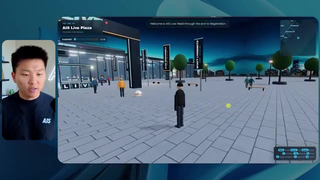

🎬 Opus 5.5 vient de révolutionner le montage vidéo (compétences gratuites)
📌 Synthèse Exécutive & Outils
Dans cette vidéo de la chaîne *Nate Herk | AI Automation*, l'analyste et ingénieur explore l'impact opérationnel du niveau d'effort appliqué au modèle d'intelligence artificielle **Opus 5.5** à travers un cas d'usage technique ambitieux : la transformation d'un dossier Frame.io de 105 gigaoctets d'enregistrements vidéo (provenant d'un événement virtuel) en un monde 3D interactif et explorable à la troisième personne simulant une conférence technologique physique. L'expérience consiste à soumettre exactement le même prompt complexe à l'agent IA en modifiant uniquement le paramètre d'effort (du niveau bas à ultra code), afin de comparer rigoureusement les livrables finaux, les temps d'exécution, la consommation de tokens, les coûts théoriques par API et l'autonomie des agents.
Les résultats obtenus remettent en question les attentes intuitives en matière d'ingénierie prompt. L'exécution en **effort faible** a produit un prototype rudimentaire, instable (disparition de personnages, images fixes non lues en vidéo) en 16 minutes et 43 secondes pour 191 000 jetons et 3,91 $. En revanche, le passage à l'**effort moyen** a radicalement transformé la qualité de l'application générée, intégrant les chartes graphiques de la marque, des flux vidéo fonctionnels dans les salles d'atelier, des PNJ (personnages non-joueurs) réactifs et une navigation fluide, le tout en 1 heure et 13 minutes pour 490 000 jetons et 12,44 $. Dans les deux cas, les agents autonomes ont exécuté des dizaines de vérifications de code dans le navigateur sans nécessiter la moindre intervention humaine ni poser de questions de clarification.
---
### 🛠️ Outils, Modèles & Logiciels Présentés
* **Opus 5.5** : Modèle de pointe d'Anthropic, réputé pour sa polyvalence, son intelligence, son coût abordable et ses capacités avancées de génération de code et de raisonnement agentique.
* **Claude Code** : Environnement de développement et assistant de codage avancé utilisé pour orchestrer la création d'applications et exécuter des agents de programmation.
* **Effort Level (Niveaux d'effort)** : Paramètre de configuration des modèles d'IA (bas, moyen, élevé, extra, max, ultra code) permettant d'ajuster dynamiquement la profondeur de calcul, le temps de traitement et la rigueur d'exécution d'un prompt.
* **Frame.io** : Plateforme cloud de collaboration vidéo utilisée ici comme source de stockage de 105 Go regroupant l'intégralité des enregistrements de l'événement virtuel AIS Live.
* **Herc 2** : Système d'exploitation IA propriétaire du créateur, servant de brique de référence pour intégrer des flux de travail et des composants logiciels personnalisés.
* **Hostinger & Connecteur Hostinger** : Solution d'hébergement web et extension gratuite pour éditeur de code permettant de combler le fossé entre le développement local d'une application et son déploiement en ligne en un clic.
---
### 🔑 Points Clés & Enseignements Stratégiques
* **Impact direct du paramètre d'effort sur la qualité architecturale** : Le choix du niveau d'effort ne modifie pas seulement la vitesse d'exécution, il détermine la capacité du modèle à structurer des applications complexes, à gérer la logique spatiale et à intégrer des éléments multimédias dynamiques sans bugs visuels.
* **Le niveau moyen comme point d'inflexion optimal** : Conformément aux recommandations officielles d'Anthropic, démarrer par un niveau d'effort moyen représente souvent le meilleur compromis entre temps de calcul, investissement financier et richesse fonctionnelle pour des projets de développement logiciel d'envergure.
* **Autonomie totale des agents autonomes** : Sur l'ensemble des tests menés avec les niveaux bas et moyen, l'agent a fonctionné de manière totalement autonome (zéro question posée à l'utilisateur tout au long du processus d'ingénierie).
* **Capacité de vérification automatisée (Self-Correction)** : L'utilisation de boucles de vérification technique — avec l'ouverture répétée du navigateur par l'agent (22 à 23 cycles de test) — permet à l'IA d'inspecter son propre travail visuellement et fonctionnellement en cours de route.
* **Richesse contextuelle et traitement multimodaux** : Un prompt bien structuré combiné à une grande puissance de calcul permet à Opus 5.5 d'analyser des téraoctets de données vidéo (via Frame.io) pour en extraire l'agenda réel, les conférenciers et les thématiques, puis de les cartographier dans un environnement 3D cohérent.
* **Corrélation linéaire entre complexité, temps et coût API** : L'effort moyen a nécessité 1 heure et 13 minutes de traitement contre 16 minutes pour le niveau bas, pour un coût estimé de 12,44 $ (contre 3,91 $) et 490 000 jetons consommés, justifiant pleinement l'écart qualitatif observé par la densité du code généré.
* **Respect des chartes graphiques et identité de marque** : Alors que l'effort faible produisait un design générique et aveugle aux couleurs de l'entreprise, le niveau moyen a su exploiter les directives de marque pour personnaliser l'interface utilisateur, les badges et l'ambiance visuelle du monde virtuel.
* **Gestion des flux vidéo et interactivité des PNJ** : Le saut qualitatif entre les niveaux d'effort se manifeste de manière flagrante dans la gestion des éléments dynamiques : transformation d'images fixes en flux vidéo fonctionnels et intégration de comportements réactifs chez les personnages non-joueurs.
* **Le défi du déploiement post-génération (Le "Last Mile")** : La création d'une application fonctionnelle par l'IA ne résout pas la friction du passage à la production; des outils d'intégration continue et de publication rapide (comme le connecteur Hostinger) sont indispensables pour combler le fossé entre le code local et la mise en ligne.
* **Compétences gratuites et démocratisation de l'ingénierie** : Ces démonstrations prouvent qu'un utilisateur sans compétences avancées en programmation 3D peut concevoir, grâce à une IA de pointe et un prompt bien orienté, des expériences immersives complexes d'une valeur marchande élevée.
🛠️ Outils, Modèles & Logiciels Présentés
🔑 Points Clés & Enseignements Stratégiques
- ✦& Enseignements Stratégiques
- ✦Impact direct du paramètre d'effort sur la qualité architecturale** : Le choix du niveau d'effort ne modifie pas seulement la vitesse d'exécution, il détermine la capacité du modèle à structurer des applications complexes, à gérer la logique spatiale et à intégrer des éléments multimédias dynamiques sans bugs visuels.
- ✦Le niveau moyen comme point d'inflexion optimal** : Conformément aux recommandations officielles d'Anthropic, démarrer par un niveau d'effort moyen représente souvent le meilleur compromis entre temps de calcul, investissement financier et richesse fonctionnelle pour des projets de développement logiciel d'envergure.
- ✦Autonomie totale des agents autonomes** : Sur l'ensemble des tests menés avec les niveaux bas et moyen, l'agent a fonctionné de manière totalement autonome (zéro question posée à l'utilisateur tout au long du processus d'ingénierie).
- ✦Capacité de vérification automatisée (Self-Correction)** : L'utilisation de boucles de vérification technique — avec l'ouverture répétée du navigateur par l'agent (22 à 23 cycles de test) — permet à l'IA d'inspecter son propre travail visuellement et fonctionnellement en cours de route.
- ✦Richesse contextuelle et traitement multimodaux** : Un prompt bien structuré combiné à une grande puissance de calcul permet à Opus 5.5 d'analyser des téraoctets de données vidéo (via Frame.io) pour en extraire l'agenda réel, les conférenciers et les thématiques, puis de les cartographier dans un environnement 3D cohérent.
- ✦Corrélation linéaire entre complexité, temps et coût API** : L'effort moyen a nécessité 1 heure et 13 minutes de traitement contre 16 minutes pour le niveau bas, pour un coût estimé de 12,44 $ (contre 3,91 $) et 490 000 jetons consommés, justifiant pleinement l'écart qualitatif observé par la densité du code généré.
- ✦Respect des chartes graphiques et identité de marque** : Alors que l'effort faible produisait un design générique et aveugle aux couleurs de l'entreprise, le niveau moyen a su exploiter les directives de marque pour personnaliser l'interface utilisateur, les badges et l'ambiance visuelle du monde virtuel.
- ✦Gestion des flux vidéo et interactivité des PNJ** : Le saut qualitatif entre les niveaux d'effort se manifeste de manière flagrante dans la gestion des éléments dynamiques : transformation d'images fixes en flux vidéo fonctionnels et intégration de comportements réactifs chez les personnages non-joueurs.
- ✦Le défi du déploiement post-génération (Le "Last Mile")** : La création d'une application fonctionnelle par l'IA ne résout pas la friction du passage à la production; des outils d'intégration continue et de publication rapide (comme le connecteur Hostinger) sont indispensables pour combler le fossé entre le code local et la mise en ligne.
- ✦Compétences gratuites et démocratisation de l'ingénierie** : Ces démonstrations prouvent qu'un utilisateur sans compétences avancées en programmation 3D peut concevoir, grâce à une IA de pointe et un prompt bien orienté, des expériences immersives complexes d'une valeur marchande élevée.
⏱️ Chronologie & Transcription Complète Audio & Visuelle (Mot pour Mot)
Opus 5.5, Opus 5.5, Opus 5.5, Opus 5.5, Opus 5.5. Ce modèle est littéralement partout et pour de très bonnes raisons. Il est intelligent, il est bon marché, il a un goût incroyable, c'est un modèle d'IA extraordinaire. Mais avec chaque modèle d'IA, vous avez le choix de l'effort, que ce soit faible, moyen, élevé, extra, max ou code ultra.
Interface & Outils : Interface web du réseau social X (Twitter).
Contenu textuel & Code : Publication textuelle et vidéo illustrant une expérimentation créative liée à l'IA.
Action / Démonstration : Affichage d'un exemple concret de contenu généré par IA pour appuyer le sujet de la vidéo.

🔍 AgrandirDonc dans cette vidéo, j'ai donné exactement le même prompt à Opus 5.5 et je l'ai exécuté à chaque niveau d'effort, et nous allons comparer les résultats. Nous allons examiner la qualité de toutes les différentes sorties réelles, mais nous allons aussi examiner combien de temps chacun d'eux a pris pour s'exécuter, combien cela nous a coûté si c'était une facturation par API, le total des jetons, combien de vérifications ils ont exécutées, et combien de questions ils m'ont réellement posées tout au long du processus.
Interface & Outils : Interface de tableau blanc ou de canvas en ligne (ex: Miro, Excalidraw ou similaire).
Contenu textuel & Code : Tableau comparatif avec les colonnes Low, Medium, High, Extra, Max, Ultracode et les lignes Run time, API cost, Total tokens, Checks, Questions asked.
Action / Démonstration : Présentation du tableau comparatif des différents niveaux d'effort d'Opus 5.5.
 🔍 Agrandir
🔍 Agrandir
Et les résultats que nous avons obtenus ne sont pas du tout ce à quoi je m'attendais, donc j'ai hâte de partager cela avec vous les gars. Ne perdons pas de temps et allons directement à celui-ci. D'accord, alors plongeons-nous directement dans celui-ci. Je veux commencer juste en vous montrant, les gars, le prompt réel que nous avons utilisé, que nous avons donné à chacun de ces différents agents. Je vais aller dans les fichiers ici, et nous allons ouvrir ce fichier markdown de prompt, et je vais vous montrer ce que nous avons obtenu. Voici donc le slash objectif que j'ai fourni.
Interface & Outils : Interface logicielle de type assistant IA / IDE (Opus 5.5 / Ultracode) avec panneau de navigation latéral.
Contenu textuel & Code : Un message de l'IA (Opus 5.5) dans le chat : "Hi Nate. This worktree has the effort-test task queued in PROMPT.md : build a walkable third-person 3D world of the AIS Live conference..." ainsi qu'une zone de saisie "Type / for commands".
Action / Démonstration : Le présentateur présente l'interface et le prompt de test d'effort chargé dans l'outil de développement IA.
 🔍 Agrandir
🔍 Agrandir
J'ai dit, tu dois me créer un monde en 3D qui est une conférence tech réaliste dans laquelle je peux me promener en vue à la troisième personne. Tu vas regarder ce dossier, qui contient mes éléments d'enregistrement d'événements provenant d'AIS Live. Et ce dossier est un dossier Frame.io de 105 gigaoctets d'enregistrements vidéo. C'était un événement entièrement virtuel. Tout a été enregistré et tous les enregistrements sont juste ici. J'ai dit, ton objectif est de prendre cet événement et de le transformer en un monde 3D explorable qui me donne l'impression d'être réellement allé à une vraie conférence en personne avec différentes salles, différentes pistes, différentes scènes, bla, bla, bla. N'hésite pas à utiliser key.ai si tu as besoin de générer des images ou des vidéos. Et tu peux aussi utiliser tout ce qui se trouve dans mon projet Herc 2, qui est comme mon système d'exploitation IA. J'ai dit,
Interface & Outils : Éditeur de code (type VS Code) et interface web Frame.io
Contenu textuel & Code : Fichier Markdown PROMPT.md contenant le prompt complet pour l'IA et interface de stockage cloud Frame.io (105 Go) [DESC_IMAGE_3]
Action / Démonstration : Navigation entre l'éditeur de code montrant le prompt et l'interface Frame.io montrant les assets d'enregistrement de l'événement.
 🔍 Agrandir
🔍 Agrandir
 🔍 Agrandir
🔍 Agrandir
 🔍 Agrandir
🔍 Agrandir
Vous serez jugé sur la créativité, le design, la physique et la sensation générale lorsque j'explorerai le monde 3D que vous avez construit. Et c'était fondamentalement la fin des instructions. Donc, comme vous pouvez le voir sur ce côté gauche, j'ai exécuté cela à travers tous les différents niveaux d'effort. Commençons par le niveau bas et remontons jusqu'à ultra code. Très bien. Nous avons donc ici le résultat du niveau bas. Ouvrons ceci et jetons un coup d'œil. Nous avons donc AIS Live, le sommet des services IA en personne enfin, et nous avons pu cliquer partout. Tout d'abord, cela ne fait pas très personnalisé. Genre, ce n'est pas le logo d'IS Live. Ce ne sont même pas nos couleurs. Donc je n'aimes pas trop ça, mais entrons ici. D'accord. C'est beaucoup trop lumineux. Euh, nous avons une carte en haut à droite. Nous avons une ville ici en arrière-plan. Je ne peux pas dire quelle ville c'est.
Interface & Outils : Interface utilisateur web ou application de bureau avec panneau latéral de navigation et zone de discussion centrale.
Contenu textuel & Code : Texte du prompt dans la zone de discussion : "Hi Nate. This worktree has the effort-test task queued in PROMPT.md : build a walkable third-person 3D world...".
Action / Démonstration : Le présentateur survole ou sélectionne différents niveaux de test d'effort dans le menu de gauche.

🔍 AgrandirC'est. D'accord. C'est Chicago, ce qui est plutôt sympa parce que tu sais, je vis à Chicago, mais bref, en haut à droite, on peut voir une carte. Nous avons un hall d'accueil. Nous avons un hall d'exposition. Nous avons un salon VIP sur la scène principale. La carte montre également où se trouve chaque autre personne et cela se synchronise en direct. On peut donc voir l'enregistrement. On peut voir le premier jour, la keynote de l'hyper agent, le débriefing en direct. Cool. Donc ça connaît réellement l'agenda et puis il y a le deuxième jour. Donc il a trouvé ça, c'est bien. Nous avons ces petites boules ici que je peux, espérons-le, propulser du pied. D'accord. Le visage, Oh, regarde ça. Si je vais par ici, tous les gens disparaissent tout simplement. Très mauvais. Très mauvais. D'accord. Alors voyons voir. Est-ce que je peux sprinter ? D'accord.
Interface & Outils : Application virtuelle 3D / Environnement virtuel avec mini-carte de navigation et affichage d'avatars.
Contenu textuel & Code : Menus d'événements, programmes (Day 1), indications de zones (Badge pickup, Expo Hall, Lobby, Main Stage) et position des avatars.
Action / Démonstration : Navigation et exploration d'un espace virtuel 3D représentant une conférence ou un salon en ligne.
 🔍 Agrandir
🔍 Agrandir
 🔍 Agrandir
🔍 Agrandir
 🔍 Agrandir
🔍 Agrandir
Je peux avancer un peu plus vite. Je vais d'abord aller par ici. Il y a des produits dérivés, euh, un sweat à capuche certifié AIS plus. D'accord. Donc il y a les vrais stands qu'on avait dans l'événement virtuel. On avait des stands. Donc c'est plutôt cool. Un petit endroit pour prendre des photos. La salle C. En ce moment, nous avons Tangy Frederick qui anime un atelier. D'accord. Mais ce n'est pas une vidéo. Comme vous pouvez le voir, c'est juste une image. Elle ne bouge pas. C'est donc juste une image. Ces gens sont en train de disparaître. Ce doivent être des fantômes. Allons par ici dans la salle A.
Interface & Outils : Monde virtuel 3D interactif (environnement type métavers ou jeu).
Contenu textuel & Code : Texte d'instructions virtuel sur un panneau affichant "Step 1: Go to Settings", "Step 2: API Integrations", "Step 3: Create A New Token".
Action / Démonstration : Exploration d'un espace d'événement virtuel en 3D avec un avatar et consultation de panneaux d'information interactifs.
Nous avons Liberty White. D'accord. Très cool. Vos 30 premiers jours dans l'automatisation. Encore une fois, c'est juste une image fixe et les gens ont des bugs d'affichage. Donc ce n'est pas très bien ici. Je vais aller sur la scène principale et voir ce que nous avons. D'accord, cool. Donc nous avons une scène principale. Les gens ont des bugs d'affichage. Vraiment beaucoup. Ce n'est vraiment pas terrible. Notre vidéo est en train de bouger. Genre, j'ai vu mon visage ici et j'ai vu celui de Devin, mais maintenant ils ont disparu. Donc je ne sais pas ce qui s'est passé. D'accord. On dirait que c'est plutôt un diaporama. Rien n'est vraiment diffusé pour l'instant. Quoi qu'il en soit, entrons ici.
Interface & Outils : Environnement virtuel 3D interactif (type metaverse/plateforme de conférence virtuelle).
Contenu textuel & Code : Interface utilisateur affichant les indications de navigation (WASD move, shift run) et le titre "Hyperagent Workshop".
Action / Démonstration : Navigation et déplacement d'un avatar à l'intérieur de l'espace virtuel pour explorer les différentes salles de la conférence.
 🔍 Agrandir
🔍 Agrandir
 🔍 Agrandir
🔍 Agrandir
 🔍 Agrandir
🔍 Agrandir
Nous avons d'autres stands. Nous avons hyper agent. Nous avons Claude Code. Nous avons plus de goodies. La salle B, c'est Dave Ebelor. Je suppose que c'est exactement la même chose. Nous avons du café. Et ensuite, je suppose que le salon VIP, c'est accès VIP uniquement. C'est plutôt cool, mais il n'y a vraiment rien qui se passe ici. Cet écran est beaucoup trop lumineux. D'accord. Donc je pense que vous comprenez l'ambiance qu'on obtient ici avec Opus 5.5 en effort faible. Et c'est là que les choses deviennent intéressantes. À combien est-ce que vous estimez que cela a tourné ? Combien de temps ? Celui-ci a tourné pendant 16 minutes et 43 secondes. Combien pensez-vous que cela a coûté ?
Interface & Outils : Application de tableau blanc ou de diagramme en ligne avec une interface épurée.
Contenu textuel & Code : Tableau avec les en-têtes Low, Medium, High, Extra, Max, Ultracode et des lignes Run time, API cost, Total tokens, Checks, Questions asked.
Action / Démonstration : Affichage d'un tableau comparatif des coûts et performances d'exécution.
 🔍 Agrandir
🔍 Agrandir
3,91 dollars si c'était une facturation par API. J'utilise évidemment mon abonnement ici, mais nous allons simplement calculer cela avec la facturation par API. Le total des jetons était de 191 000. Il a fait 22 vérifications. Donc pour la vérification, 22 fois il a ouvert le navigateur et a exécuté différentes sortes de vérifications. Donc 22 catégories de vérifications. Et combien de questions m'a-t-il posées ? Il m'a posé un total de zéro question tout au long de cette invite de commande d'objectif. D'accord. Alors ouvrons l'effort moyen et voyons ce que nous avons. D'accord, c'est parti. Effort moyen. Nous avons Nate Herc. Nous avons mon badge. C'est marqué par AI's Life.
Interface & Outils : Outil de tableau blanc / application de design (type Excalidraw ou similaire)
Contenu textuel & Code : Tableau structuré avec les lignes : Run time (16m 43s), API cost ($3.91), Total tokens (191.3K), Checks, et Questions asked, sous des colonnes de niveau d'effort (Low, Medium, High).
Action / Démonstration : Le présentateur explique les métriques affichées dans le tableau concernant le coût par API et le nombre total de tokens.
 🔍 Agrandir
🔍 Agrandir
Donc ça a déjà l'air un petit peu mieux. Ça ressemble à nos palettes de couleurs qui ont utilisé nos directives de marque. Premier jour de construction, deuxième jour de gain, VIP. Cool. D'accord. Je vais entrer dans le lieu. D'accord. Waouh. Une ambiance similaire, en gros. C'est en arrière-plan. Ça ne ressemble pas à Chicago, hein ? Non, ça ressemble à, honnêtement, ça ressemble à une ville imaginaire. Quoi qu'il en soit, c'est marrant qu'ils aient décidé de faire ça. Voyons si je peux avancer un peu plus vite. Oh, waouh.
Interface & Outils : Application web interactive 3D, interface utilisateur d'un espace virtuel événementiel.
Contenu textuel & Code : Texte de bienvenue 'Welcome to AIS Live', badge 'Nate Herk', contrôles clavier (WASD, Shift, Space, etc.) et informations sur les sessions et participants.
Action / Démonstration : Le présentateur navigue dans l'interface et s'apprête à entrer dans le lieu virtuel ('Enter the Venue').
 🔍 Agrandir
🔍 Agrandir
 🔍 Agrandir
🔍 Agrandir
Les gens interagissent avec moi. Regardez. Si je m'approche de ce type, il vient de lever le bras. Bon, maintenant il ne veut plus du tout avoir affaire à moi. Mais tous ces petits robots ici doivent prendre des décisions. Je ne suis pas sûr qu'ils utilisent Jev. C'est sûr que non. Je ne le lui ai pas dit. En fait, ma clé Jev est à l'arrière. Je ne sais pas. Peut-être qu'il l'a utilisée. Quoi qu'il en soit, nous pouvons voir ici que nous avons la salle d'atelier C, le laboratoire des agents. Sympa. Donc celui-ci est en fait exécuté. Vous pouvez voir qu'il s'agit d'une vraie vidéo lue par Tangy. Tout le monde ici est en train de travailler sur un ordinateur portable. Ils ne buguent pas. C'est plutôt cool. De plus, mon badge est sur ma poitrine, ce qui est plutôt cool. Je peux venir par ici. Nous avons une carte en haut à droite, comme vous pouvez le voir, mais je peux venir par ici. Nous avons un
Interface & Outils : Environnement virtuel 3D / Plateforme de simulation d'agents.
Contenu textuel & Code : Interface d'un monde virtuel en 3D avec mini-carte et affichage d'informations de session en bas à gauche.
Action / Démonstration : Exploration d'un environnement virtuel interactif peuplé d'avatars et de personnages animés.
halle d'exposition. C'est là que nous avons le stand Glido. Et ça diffuse en ce moment. Oui, ça diffuse la vidéo de nous en train de parler de Glido. Ça diffuse la vidéo d'Ed et moi parlant de notre programme de certification. Nous avons le logo AIS Plus ici à l'arrière, qui est un peu mal placé. Ce sont les diapositives des conférenciers et les points clés. Alors ouah, ce sont toutes les ressources que nous avons distribuées après l'événement. Elles sont toutes là aussi. Nous pouvons voir que nous avons un projecteur de communauté. Donc c'est Aiden qui parle de son contrat qu'il a décroché et c'est diffusé en direct. Ces gens regardent.
Interface & Outils : Environnement virtuel 3D de type metavers / plateforme d'exposition en ligne.
Contenu textuel & Code : Affiches textuelles, diapositives de présentation et panneaux d'information virtuels.
Action / Démonstration : Navigation et visite guidée d'un salon d'exposition virtuel par le présentateur.
Ils sont plutôt engagés. On a l'hyper agent. C'était, c'est ce que je voulais dire. Si vous avez vu ces gens lever les bras pour dire bonjour, c'était plutôt drôle. Regardez, regardez, le voilà qui recommence. Bref. Bon. Où est-ce que je suis maintenant ? Maintenant, je suis dans le hall principal. On a un bar à café. On a un grand logo, qui est le vrai logo. C'est trop lumineux, mais on a le logo. On peut voir si on peut entrer ici dans le parcours des fondations. On a Sabrina Romanov et Liberty White. Donc différentes formations juste là. On peut entrer dans cette salle. C'est le parcours avancé. Alors qu'est-ce qui se passe ici. On a Dave Ebelar et Saman qui parlent de différentes choses là-dedans. Et maintenant, allons jeter un œil à la scène principale. Oh, attendez, il y a une vidéo de moi là-haut. Est-ce que c'est genre un VIP
Interface & Outils : Application de métavers / espace virtuel 3D interactif.
Contenu textuel & Code : Environnement virtuel 3D avec interface de navigation, mini-carte et avatars d'utilisateurs.
Action / Démonstration : Navigation et déplacement d'un avatar dans l'espace virtuel du métavers.
section ? Ouais, on ira voir ça dans une minute. Mais bref, voici la scène principale. Ça a l'air vraiment, vraiment très bien. On a une grande scène. On a genre quatre personnes assises ici. On a les trois écrans d'Alex là-haut avec hyper agent. Est-ce que j'ai le droit de monter sur scène ? Oh, et il me laisse monter sur scène. OK. C'est plutôt sympa. Bon les gars, faisons un selfie. Laissez-moi prendre tout le monde en arrière-plan. Venez par ici. Bref, c'est vraiment, vraiment cool. Toutes les places ne sont pas prises par contre. Donc il faut qu'on travaille là-dessus. Mais bref, je vais y retourner en courant pour voir ce qu'était cette section VIP. OK. Salon VIP. J'ai l'impression que c'est comme un aéroport ou un truc du genre.
Interface & Outils : Application de métavers ou de conférence virtuelle 3D.
Contenu textuel & Code : Interface utilisateur avec encart d'information 'Hyperagent Keynote' et mini-carte de navigation.
Action / Démonstration : Navigation de l'avatar dans l'espace virtuel de la conférence.
OK, super. Donc maintenant, nous avons les sessions VIP ici. Une foire aux questions VIP avec la lecture vidéo en direct de Nate juste ici. Très, très cool. Et nous avons comme un bar ou quelque chose comme ça. Génial. Je dirais que c'est un plutôt bon résultat. Maintenant, en ce qui concerne les statistiques ici, celle-ci a pris une heure et 13 minutes à s'exécuter. Cela nous aurait coûté 12 dollars et 44 cents. Elle a utilisé 490 000 jetons et elle a effectué 23 vérifications.
Interface & Outils : Application virtuelle 3D / Interface de tableau blanc ou de métriques (Opus 5.5 Efforts).
Contenu textuel & Code : Tableau avec métriques : Run time (16m 43s), API cost ($3.91), Total tokens (191.3K), Checks (22), Questions asked (0).
Action / Démonstration : Présentation des résultats et des coûts d'exécution de la session virtuelle VIP.
 🔍 Agrandir
🔍 Agrandir
 🔍 Agrandir
🔍 Agrandir
Et il nous a posé un total de zéro question une fois de plus. Très bien, passons au niveau élevé. C'était déjà un résultat plutôt correct et Anthropic eux-mêmes dans leur vidéo de comment prompter Opus 5.5, ou désolé, pas une vidéo, un article. Ils ont dit de commencer simplement par le niveau moyen et de l'ajuster à la hausse ou à la baisse si nécessaire. C'était donc un résultat moyen. Passons au niveau élevé et voyons ce que nous avons obtenu. Très rapidement, les gars, je dois prendre une seconde pour vous parler du sponsor de la vidéo d'aujourd'hui, Hostinger. Donc ces deux modèles viennent de me construire une version fonctionnelle de la même chose. Et maintenant, je me retrouve exactement là où je finis toujours, avec quelque chose de terminé sur mon ordinateur portable et aucun moyen rapide de le mettre en ligne. Et c'est le fossé que comble le connecteur d'Hostinger. C'est une extension gratuite
Interface & Outils : Tableau blanc/application de notes et interface de développement (VS Code / Cursor).
Contenu textuel & Code : Tableau de données chiffrées (Run time, API cost, Total tokens, etc.) et code source / prompt pour un calculateur de ROI.
Action / Démonstration : Analyse comparative des performances des différents niveaux d'effort d'Opus 5.5.
 🔍 Agrandir
🔍 Agrandir
 🔍 Agrandir
🔍 Agrandir
pour votre éditeur qui intègre votre compte Hostinger dans l'environnement où vous codez déjà. Que ce soit VS Code, Cursor, Cloud Code, Codex, peu importe. Vous vous connectez une seule fois en un clic, et à partir de là, votre agent peut déployer le site, y associer un nom de domaine, configurer les enregistrements DNS et vérifier votre VPS sans que vous n'ayez jamais à quitter l'éditeur. Ainsi, peu importe celui de ces outils que vous finirez par préférer, ce qu'il a construit n'est qu'à quelques minutes d'une vraie URL sur un hébergement géré. Le connecteur est gratuit avec chaque formule d'hébergement, donc si vous avez toujours besoin de l'hébergement en dessous, prenez la formule illimitée avec le lien dans la description et utilisez le code NATEHERK pour obtenir 10 % de réduction. Cela inclut également un nom de domaine gratuit et un e-mail professionnel pour un an. Et c'est toujours le moyen le moins cher que j'ai trouvé pour obtenir quelque chose
Interface & Outils : Interface de gestion Hostinger pour IDE et interface Claude Code (avec incrustation vidéo du présentateur).
Contenu textuel & Code : Section « Manage Hostinger from your IDE », statut « Connected (via OAuth) », et liste des outils disponibles : Websites, Domains, Subscriptions & Payments, Email Marketing.
Action / Démonstration : Connexion réussie du compte Hostinger à l'environnement de développement via OAuth.
 🔍 Agrandir
🔍 Agrandir
vous avez construit sur une vraie URL. Donc revenons à la vidéo. D'accord. Encore une fois, très, très marqué par la marque. C'est un écran de chargement encore mieux que le précédent. Nous avons ce joli petit effet en arrière-plan. Nous avons le logo. Nous allons entrer dans le lieu. D'accord. Nous y voilà. Ça a l'air plutôt bien. Nous commençons à l'extérieur et vous pouvez voir que nous avons ces drapeaux pour tous les intervenants, Wyatt, Casper, Alex, Ed, Aiden, Sabrina, Liberty. C'est plutôt cool. Nous avons des blocs en direct ici.
Interface & Outils : Navigateur web affichant une application virtuelle 3D interactive (environnement virtuel AIS Live).
Contenu textuel & Code : Écran de chargement et interface de monde virtuel 3D avec bannières informatives et commandes clavier/souris affichées en bas à droite.
Action / Démonstration : Le présentateur se connecte à l'événement virtuel et explore la place interactive en 3D (« AIS Live Plaza »).
 🔍 Agrandir
🔍 Agrandir
 🔍 Agrandir
🔍 Agrandir
 🔍 Agrandir
🔍 Agrandir
il a pris cette photo de moi, votre hôte, Nate Herc, John, Dave, Nate Herc. Voilà. D'accord. Les portes. Génial. Ce sont des portes coulissantes automatiques en verre. J'adore ça. Nous pouvons voir l'enregistrement VIP. Nous pouvons voir l'admission générale. Nous pouvons venir ici et nous pouvons découvrir l'exposition avec différents stands, le projecteur sur la communauté. Vous pouvez également voir qu'en haut à gauche, j'ai un passeport. C'est donc comme si, cela montrera combien d'endroits j'ai visités. Tout cela est une vraie lecture. Nous avons un mur de ressources avec tous les différents intervenants. Ils ont également une session de réseautage par ici. Je vais donc venir très vite et voir de quoi il s'agit. Nous avons donc le bar à infusion à froid AIS. Nous avons différents membres de la communauté qui ont été mis en avant ou en valeur.
Interface & Outils : Environnement 3D interactif / Application web en réalité virtuelle ou métavers.
Contenu textuel & Code : Interface utilisateur virtuelle affichant 'Registration Concourse', 'VIP Check-In' et un mini-plan en haut à droite.
Action / Démonstration : Exploration et navigation dans un espace virtuel d'événement en ligne.
 🔍 Agrandir
🔍 Agrandir
 🔍 Agrandir
🔍 Agrandir
 🔍 Agrandir
🔍 Agrandir
On a l'aile VIP. Attends, quoi ? Prends un bracelet. Ah, je dois vraiment aller chercher le bracelet. D'accord. Laisse-moi m'enregistrer rapidement. Le bracelet est déjà mis. Attends, quoi ? D'accord. Oh, d'accord. Maintenant, les portes se sont ouvertes pour moi. Cool. Je peux entrer ici. Oh, ça mène juste à la scène principale. Salon VIP. Il y a une séance de questions-réponses en cours. Ça a l'air très cool. Je veux dire, je suis très impressionné par la façon dont il parvient à faire ça. Waouh. D'accord. Donc c'est vraiment bien. Ce qu'on a fait, c'est qu'on a eu des salles de discussion VIP avec différentes personnes. Vous pouvez voir qu'il y a différentes salles, différents membres de l'équipe AIS qui participent à des trucs. C'est vraiment cool. C'est très cool. C'est un bien meilleur VIP
Interface & Outils : Environnement virtuel 3D interactif (type métavers / plateforme événementielle virtuelle).
Contenu textuel & Code : Textes d'interface du monde virtuel (Registration Concourse, VIP Lounge, VIP Working Sessions, commandes de navigation).
Action / Démonstration : Exploration et déplacement du avatar du présentateur à l'intérieur de l'espace virtuel de la conférence.
 🔍 Agrandir
🔍 Agrandir
 🔍 Agrandir
🔍 Agrandir
 🔍 Agrandir
🔍 Agrandir
expérience que ce qui a été montré dans le premier élément. D'accord. After party VIP. Regardez ça. On a une piste de danse. On a tous ces éléments ici. On a la lecture de l'after party VIP juste ici. Et il y a une estrade de DJ. C'est trop marrant. Il y a un petit bug ici, un petit glitch ici, mais c'est génial. Oh, cool. Donc quand je suis ici sur la scène principale, on a des sous-titres. Vous pouvez voir juste ici en bas de mon écran, on a ces sous-titres de Wyatt qui est en train de parler là-haut. On a des lumières. On a le panel. Très cool. Belle scène principale. Je vais aller ici. On peut aller à la fondation,
Interface & Outils : Application ou plateforme virtuelle 3D avec avatars et diffusion vidéo en direct.
Contenu textuel & Code : Interface utilisateur virtuelle affichant "VIP After-Party", des avatars de participants et un écran vidéo.
Action / Démonstration : Navigation et exploration d'un environnement virtuel 3D interactif.
 🔍 Agrandir
🔍 Agrandir
 🔍 Agrandir
🔍 Agrandir
 🔍 Agrandir
🔍 Agrandir
avancé, et les parcours d'entreprise par ici. Alors voyons voir. Nous avons l'anatomie de trois vraies transactions. Nous avons hyper agent. Nous avons les évaluations avec Nate et Ed ici. Nous avons Dave qui s'occupe des trucs avancés. C'est vraiment bien. Je veux dire, évidemment, chacun de ces résultats jusqu'à présent, faible était correct. Moyen était meilleur. Élevé a été encore meilleur. Voyons si cette tendance se poursuit et voyons combien cela nous a coûté. Donc, élevé a fonctionné pendant une heure et sept minutes. Donc un peu plus rapide que moyen, cela nous aurait coûté 16 dollars et 31 cents. Il a utilisé un demi-million de jetons, 509 000. Il a fait 22 vérifications. Et il nous a aussi demandé, enfin, non, je me suis trompé. Ce
Interface & Outils : Application de tableau blanc / interface de présentation (style Excalidraw ou outil similaire) et environnement virtuel 3D.
Contenu textuel & Code : Tableau de données comparatives sur les performances et coûts d'effort (Run time: 16m43s, 1h13m, 1h07m ; API cost: $3.91, $12.44, $16.31 ; Total tokens: 191.3K, 419.2K).
Action / Démonstration : Présentation d'un tableau comparatif d'évaluations et de coûts pour différents niveaux d'effort (Low, Medium, High, Extra).
 🔍 Agrandir
🔍 Agrandir
L'un m'a posé une question, et attention au spoiler, c'était le seul à nous poser une question de tout ça. Voyons voir, il nous en reste trois : Extra, Max et Ultra Code. Laissez-moi ouvrir Extra et nous allons voir ce qu'on a. D'accord. Celui-ci a l'air plutôt bien. Je dirais honnêtement que jusqu'à présent, l'écran de chargement haut était le meilleur, celui qu'on vient juste de voir, mais bref, entrons dans AIS Live.
Interface & Outils : Application de tableau de bord / interface web avec un tableau de données analytiques.
Contenu textuel & Code : Données comparatives de performance et de coûts : Run time (16m 43s, 1h 13m, 1h 7m), API cost ($3.91, $12.44, $16.31), Total tokens (191.3K, 419.2K, 509.3K), Checks (22, 23, 22), Questions asked (0, 0, 1).
Action / Démonstration : Le présentateur commente le tableau et s'apprête à ouvrir la colonne 'Extra'.
 🔍 Agrandir
🔍 Agrandir
Waouh. D'accord. Donc nous avons comme de petits extraits sonores. Je peux discuter avec des gens. Le panel de la guerre des outils a réglé quelques débats pour moi. Sympas. Bon point de vue là-dessus. Nous sommes à nouveau dehors. Nous avons ces différentes bannières, bien qu'elles soient toutes les mêmes. Elles n'affichent pas les noms de différentes personnes. Donc grand logo AIS en direct. L'aile des ateliers est par ici. Et traversons les portes coulissantes en verre pour voir ce que nous avons. Nous avons donc le café AIS. La carte est en bas à droite, et elle n'est pas très descriptive.
Interface & Outils : Un environnement virtuel (probablement une plateforme de metavers ou une application de conférence virtuelle).
Contenu textuel & Code : Texte sur les bannières : "AI IS LIVE", "LIVE", "BUILD DAY", "Convention Plaza".
Action / Démonstration : Navigation dans un environnement virtuel. L'interaction avec des éléments comme des bannières est implicite.
 🔍 Agrandir
🔍 Agrandir
 🔍 Agrandir
🔍 Agrandir
 🔍 Agrandir
🔍 Agrandir
J'aime bien comment les autres cartes nous ont indiqué ce que, genre où se trouvaient les choses, mais celle-ci a l'air très professionnelle. On peut voir ici c'est la scène principale. Allons y faire un saut rapidement. Elles ont toutes ces balles qui volent autour, ce que je trouve plutôt marrant. Les ballons de plage AIS. On nous voit là-haut en train de parler. Je crois que j'introduisais l'un des jours. Continuons à avancer par ici vers la salle d'atelier sur ce côté gauche. OK. Donc ici nous avons le théâtre Hyper Agent. Nous avons cette session sponsorisée ici par Hyper Agent, mais cela nous montre aussi ce qui va s'y passer. C'est vraiment marrant qu'on puisse discuter avec les gens. Salmon a construit un représentant commercial vocal en direct. La salle du Juste Prix était comble. Tu as pris le guide du compagnon VIP ? C'est trop marrant. On a le parcours avancé dans
Interface & Outils : Application web 3D immersive et interactive de type métavers / salon virtuel.
Contenu textuel & Code : Interface utilisateur virtuelle affichant des avatars 3D, des bannières textuelles (« Workshops », « Enterprise AI Services »), des mini-cartes et des sous-titres.
Action / Démonstration : Navigation et exploration de l'espace virtuel par le présentateur sous forme d'avatar.
 🔍 Agrandir
🔍 Agrandir
 🔍 Agrandir
🔍 Agrandir
 🔍 Agrandir
🔍 Agrandir
here. Once again, we've got live playback. Is that live playback? Oh, okay. It started once I got in, but I can take a seat. Oh my. I can watch this. I can stand up. I want to sit in the front. That's pretty cool. That's very nice. I like that. And you know what I noticed so far? The actual character that I'm playing kind of looks like me. I think it modeled it off of my thumbnail pictures or something. Anyways, we have Sabrina in here, room host here, grab any open seat. Okay, cool. And I really liked the sitting functionality. It's kind of funny. Like we could actually attend this workshop and participate. Anyways, it's showing us the speakers. It's showing us the
Interface & Outils : Application de métavers ou de salle de classe virtuelle 3D interactive.
Contenu textuel & Code : Interface utilisateur de l'événement virtuel avec des pistes de formation (Foundation Track, Advanced Track).
Action / Démonstration : Navigation et exploration de l'espace virtuel interactif en 3D par l'utilisateur.
 🔍 Agrandir
🔍 Agrandir
 🔍 Agrandir
🔍 Agrandir
 🔍 Agrandir
🔍 Agrandir
agenda. There's a little red carpet here to take some pictures. We can strike a pose. Oh, wow. That's pretty cool. Resource library, get AIS Plus certified, Glido, Hyper Agent, AIS Plus, three real deals. Awesome. I mean, I would definitely say so far, each one is getting better. And we didn't even check out the VIP section yet, the VIP lounge. Let's go up here real quick. Hopefully I can get in. Nice. We've got tooling reset. These are the different rooms we could go in. So once again, I could grab the worksheet and I could try to understand how to price my stuff. This is so cool. This is definitely better than the previous one where we kind of just
Interface & Outils : Application ou plateforme virtuelle 3D (metaverse / espace événementiel virtuel).
Contenu textuel & Code : Éléments textuels et interface de navigation 3D d'un événement virtuel (Expo Hall, VIP Lounge).
Action / Démonstration : Navigation et exploration d'un environnement virtuel 3D par le présentateur.
like looked at stuff. Awesome. I can get behind the bar and come in here. This is very nice. Okay. So as far as statistics go, this one ran for an hour and a half. It costs 25.92 bucks. I don't know why I say point $25, 92 cents. It was 733,000 tokens and 34 checks. So it had the most checks so far by far. And it asked us zero questions. I can't wait to see what we got here from max and ultra code. Okay. Here is max loading screens, boring, but it's on brand and it has our logo.
Interface & Outils : Application de tableau blanc / diagramme (type Excalidraw ou similaire).
Contenu textuel & Code : Tableau avec des colonnes "Medium", "High", "Extra", "Max", "Ultracode" affichant des durées (ex: 1h 13m, 1h 31m), des coûts ($12.44, $16.31), des tokens (419.2K, 509.3K) et des compteurs de vérifications.
Action / Démonstration : Le présentateur commente les statistiques du test affichées dans le tableau pour le niveau d'effort sélectionné.
 🔍 Agrandir
🔍 Agrandir
So that was good. I like that. We will go ahead and enter AIS live. Ooh, nice little animation here that brings us in. Once again, the character looks like me. They've all looked like me. I mean, sort of, we have sitting in the background. This looks like Chicago. Like I mentioned earlier, a lot of these are playing sounds and I'm not including that because it would be very distracting for you guys to try to listen to what's going on as well as me speaking. So there is like some slight music in all these. I hate how this is walking. This walking is really, really bad. I mean, the walking, yeah, I don't like this at all. So that's not great. But besides that, let's go in and explore. Notice these shadows when I walk in, they like really switch. I'm not sure why that is,
Interface & Outils : Application web 3D / Environnement virtuel interactif (AIS live).
Contenu textuel & Code : Interface utilisateur 3D avec mini-carte, indicateurs de touches de navigation en bas et interface de diffusion en haut à droite.
Action / Démonstration : Navigation et déplacement d'un avatar 3D dans l'espace virtuel de la plateforme AIS live.
 🔍 Agrandir
🔍 Agrandir
 🔍 Agrandir
🔍 Agrandir
 🔍 Agrandir
🔍 Agrandir
but anyways, we can chat with people in here too. Hyperagent booth is right where you walk into the expo. All good. Okay, cool. I can keep clicking E to make them change what they say. We've got the speakers right here. That looks pretty good. Although we definitely had everyone's profile picture. So I'm not sure why that's not included there. We see people taking pictures right here. I love that. And it saves a little picture. Okay. The map also isn't super, like doesn't give me a great explanation of what's going on, but I like these booths. These are cool. I think these booths are the best that I've seen so far. Like they just look nice. They've got reps. There's nice like slides behind them. Yeah. These booths are cool. Okay. We have a little featured theater
Interface & Outils : Application web de métavers / monde virtuel 3D interactif
Contenu textuel & Code : Environnement virtuel 3D interactif avec avatars, panneaux d'affichage et mini-carte de navigation
Action / Démonstration : Exploration et navigation dans l'espace virtuel de la conférence à l'aide des contrôles clavier/souris
 🔍 Agrandir
🔍 Agrandir
 🔍 Agrandir
🔍 Agrandir
 🔍 Agrandir
🔍 Agrandir
going on over here. It's Casper. Although why is this not playing? I feel like this should be playing, right? Like in the other ones, they were always playing. We can talk to some other people over here. Coffee's free. Blah, blah, blah. Amy Simpson, Matt Wolf. Nice. Okay. This is just the networking area that we're in right now, but we can see in the top right. We can also see what's live on the main stage right now. It is a tool war panel. So let's head in here. We've got Devin, Cole, Dave, and Russ chatting in here. We've got sort of AV, some light stuff going on back here.
Interface & Outils : Navigateur web / plateforme virtuelle 3D (espace de conférence virtuel).
Contenu textuel & Code : Interface utilisateur d'un événement virtuel en ligne avec bannières d'information, mini-carte et avatars.
Action / Démonstration : Exploration interactive d'un espace de networking virtuel en 3D par le présentateur.
Basculons la scène principale sur ce qui compte vraiment en ce moment. Je peux donc changer de sujet. C'est cool. Je viens donc de passer à moi et Matt. Nous pouvons passer à l'anatomie de trois vraies transactions. C'est plutôt cool. La scène a l'air bien. On a un petit panel sympa ici. Je peux monter sur la scène ? Sympa. Sympa. Bon, je ne peux pas aller trop loin, en fait. Bon tout le monde, laissez-moi prendre le selfie. Tout le monde vient là-dedans. Je peux aussi m'asseoir dans ce public par ici et simplement profiter de la session.
Interface & Outils : Environnement virtuel 3D / Métavers de conférence.
Contenu textuel & Code : Aucun code source, terminal, prompt ou donnée technique affiché.
Action / Démonstration : Navigation et déplacement d'un avatar dans un environnement virtuel 3D.
Très cool, très cool. OK, allons par ici. Je vois une section à l'étage. C'est marrant comme ils choisissent tous de mettre la section VIP à l'étage. Je veux dire, je ne déteste pas ça. Oh la la, ils ont un escalator. Pas possible. Je vais discuter avec ce type sur l'escalator. Glenn a 15 ans d'expérience en agence. Ses trucs de "land and expand" étaient en or. Du super boulot, Glenn. Cool, donc je vais... je n'arrive même pas à dépasser ce type, par contre.
Interface & Outils : Application web 3D immersive / environnement virtuel de conférence
Contenu textuel & Code : Interface utilisateur virtuelle affichant des informations de navigation, un mini-plan et une bulle de discussion contextuelle au-dessus d'un avatar
Action / Démonstration : Navigation dans l'environnement 3D et interaction avec un autre participant sous forme d'avatar virtuel
 🔍 Agrandir
🔍 Agrandir
 🔍 Agrandir
🔍 Agrandir
 🔍 Agrandir
🔍 Agrandir
Oh, je devais sauter par-dessus lui. D'accord, niveau VIP, badge requis. Oh mon Dieu. Tu te moques de moi ? Je dois aller chercher mon badge. D'accord, super. Maintenant, ça montre que je suis un vrai VIP et je peux aller ici dans la section VIP. Nous avons de petites sessions de travail sympas par ici, auxquelles nous pouvons participer. Je me demande si ça va me laisser m'asseoir ici. Je peux juste discuter. Est-ce que je peux participer ? Ça ne me laisse pas m'asseoir et participer. C'est pas grave. Nous avons la salle de crise sur les tarification. Oh, ça pourrait être l'after-party. Allons voir ce qui se passe par ici. Ou peut-être que je dois juste entrer par ici. D'accord. C'est bizarre. Je devais juste entrer par ici. Cet after-party n'est pas aussi cool que l'autre. Mais bref, allons voir ce qui se passe par ici.
Interface & Outils : Application de métavers / monde virtuel 3D en ligne
Contenu textuel & Code : Interface utilisateur virtuelle affichant un profil utilisateur VIP et des interactions de chat.
Action / Démonstration : Navigation et exploration de l'espace virtuel par le présentateur.
dans les ateliers. D'accord. Ce n'était pas bien. Regardez ça. On peut tout voir et je viens de bugger et maintenant boum. Donc ce n'est pas bon. Je dirais qu'globalement, je veux dire, vous avez l'ambiance de la façon dont ça fonctionne, but I would say that the one before, which was, I believe high, I liked that one better. Je ne peux pas m'asseoir dans ces chaises non plus. Ouais. Donc je n'aime pas la marche dans celui-ci.
Interface & Outils : Application web de métaverse ou d'événement virtuel 3D (type Gather.town ou similaire).
Contenu textuel & Code : Interface utilisateur virtuelle affichant un profil d'intervenant (« Nate Herk »), une carte miniature, des commandes de navigation et un tableau d'affichage de conférence.
Action / Démonstration : Navigation et déplacement d'un avatar à travers un espace virtuel d'ateliers et de conférences en ligne.
 🔍 Agrandir
🔍 Agrandir
 🔍 Agrandir
🔍 Agrandir
 🔍 Agrandir
🔍 Agrandir
Je n'aime pas autant l'ambiance et il y a quelques bugs. Donc, jusqu'à présent, si nous voulons regarder notre liste, j'aime bien Extra Extra, c'était celui que j'aimais le plus jusqu'à présent. Mais de toute façon, celui-ci était au maximum. Celui-ci était au maximum juste ici. Alors voyons combien de temps cela a duré, deux heures et 28 minutes. Donc ça a duré longtemps, 50 dollars et 38 centimes, 1,18 million de jetons. Donc il y a eu une compaction et il a dû faire une auto-compaction. Et puis il a fait 51 vérifications. Est-ce vraiment le cas ? Parce qu'il y avait beaucoup de bugs là-dedans. Et de toute façon, celui-ci ne nous a posé aucune question. Donc, jusqu'à présent, à chaque fois, c'est presque devenu plus cher et ça a pris plus de temps, à part ici. Mais ceux-ci fondamentalement
Interface & Outils : Application web de tableau ou de mind mapping avec le présentateur en incrustation vidéo à gauche.
Contenu textuel & Code : Tableau avec des colonnes Medium, High, Extra, Max, Ultracode contenant des données chiffrées (durée, prix, tokens).
Action / Démonstration : Le présentateur commente et compare les différentes colonnes et options affichées à l'écran.
 🔍 Agrandir
🔍 Agrandir
a pris un laps de temps très similaire, mais à chaque fois, il a utilisé plus de tokens parce qu'ils ont davantage réfléchi. Et puis, vous savez, ces tokens vont coûter plus cher. Mais bref, passons au dernier, qui est ultra code. Donc, nous espérons vraiment que celui-ci est le meilleur. Allons donc sur ce localhost et voyons ce que nous avons. D'accord, super. Regardez ce badge. C'est un joli badge host all access. Nous avons un joli petit visuel juste ici. Nous allons continuer et entrer AIS Live. Cool. D'accord. Bienvenue, Nate. J'aime bien la marche. Ça a l'air réaliste. J'aime le logo, même s'il manque le petit point rouge qui donne l'impression que c'est du direct. La carte en haut à droite
Interface & Outils : Tableau comparatif et interface d'application web 3D.
Contenu textuel & Code : Données chiffrées de temps (1h 7m à 2h 28m), coûts ($16.31 à $50.38) et tokens (509.3K à 1.18M).
Action / Démonstration : Présentation des résultats comparatifs et navigation dans l'application générée.
 🔍 Agrandir
🔍 Agrandir
 🔍 Agrandir
🔍 Agrandir
est un peu mieux étiqueté, donc je peux voir ce qui se passe. Je vais venir ici et récupérer mon bracelet VIP rapidement. Ok, super. Ça me dit aussi quoi faire. Donc en haut à gauche, il est écrit de flasher au portail VIP sur le mur est du hall. Je crois donc que l'est serait par là, non ? Never eat soggy waffles. Ouais. Ailes VIP, flasher le bracelet. Ok, cool. Maintenant, je suis dans la section VIP. Je peux voir ces différentes salles. L'outil a été réinitialisé. La vidéo en direct est diffusée. Je peux voir les sous-titres juste là de ce qui est en train d'être dit. Ça diffuse aussi les sons, mais je ne diffuse tout simplement pas l'audio pour vous les gars parce que je ne veux pas submerger.
Interface & Outils : Application ou plateforme virtuelle 3D d'événement en ligne (Gather town ou similaire)
Contenu textuel & Code : Textes d'indication de mission et de navigation (Registration & Lobby, VIP Wing, VIP Room 5)
Action / Démonstration : Navigation et exploration de l'espace virtuel par le présentateur pour accéder aux différentes salles VIP
 🔍 Agrandir
🔍 Agrandir
 🔍 Agrandir
🔍 Agrandir

🔍 AgrandirEncore une fois, celui-ci fonctionne avec Cody et Mustafa là-dedans. C'est génial. Vidéo en direct. La vidéo ne se lance pas tant qu'on n'entre pas, par contre. Donc, honnêtement, je pense que c'est un bon choix. Dès que j'entre, par contre, la vidéo démarre. Sympa. Belle attention. Toutes ces pièces. Génial. Ouais. Je veux dire, ça fait très haut de gamme. Voici une salle de guerre pour la tarification. Allons-hop, entrons ici. Moi et John là-dedans.
Interface & Outils : Application web / Metavers virtuel interactif
Contenu textuel & Code : Environnement virtuel 3D avec affichage de texte 'VIP Wing' et indications de salles ('Price It Right - First 10 Clients Plan').
Action / Démonstration : Navigation d'un avatar dans l'espace virtuel et exploration des différentes salles.
 🔍 Agrandir
🔍 Agrandir
Et ensuite nous avons l'after-party sympa. Cet after-party n'est pas encore aussi animé. Et nous avons plus de ballons de plage pour une raison quelconque, mais cet after-party est cool. Je veux dire, ça nous donne une bonne ambiance et il y a la retransmission juste ici de notre session de questions-réponses de l'after-party, tout cela est en direct aussi. Génial. D'accord. Dirigeons-nous vers la scène principale. Cela m'invite aussi à prendre une place côté allée à la scène principale, qui est tout droit en traversant l'expo. Donc en fait, traversons d'abord l'expo. Qu'est-ce que vous construisez ? Il y a beaucoup de gens qui parlent de différentes choses par ici. Waouh. Il y a aussi comme un petit truc de basketball. Est-ce que je peux le lancer ? Je peux. Est-ce que je dois regarder en l'air pour le lancer ? D'accord.
Interface & Outils : Application de métavers ou espace virtuel 3D en ligne (Gather ou similaire).
Contenu textuel & Code : Interface utilisateur virtuelle montrant des avatars, une piste de danse, un écran de retransmission et une carte de localisation.
Action / Démonstration : Navigation et visite guidée des différents espaces virtuels de la conférence par le présentateur.
 🔍 Agrandir
🔍 Agrandir
Eh bien, pas terrible. Mais bref, nous avons un stand AIS plus. Nous avons le stand Glido. Est-ce que ça diffuse en direct ? Oui, ça diffuse définitivement en direct. Sympa. Nous avons le stand hyper agent. Nous avons d'autres trucs par ici. Bon, cool. Je vais aller dans la salle principale et voir si on peut choper un siège côté allée. Dès qu'on entre, tout commence à jouer. On a une très belle ambiance de scène. Comment je fais pour choper un siège côté allée par contre. Voilà. Il a fallu que je trouve le bon. Choper le siège côté allée. Il n'y a personne sur la scène, ce qui est bizarre. J'aimais bien quand il y avait des gens sur la scène dans les versions précédentes.
Interface & Outils : Application web de conférence virtuelle en 3D (AIS Live)
Contenu textuel & Code : Environnement virtuel 3D avec des stands d'exposition, une scène principale, des avatars d'utilisateurs et des flux vidéo en direct.
Action / Démonstration : Navigation et exploration de l'espace virtuel par le présentateur, puis installation dans l'auditorium principal.
 🔍 Agrandir
🔍 Agrandir
 🔍 Agrandir
🔍 Agrandir
 🔍 Agrandir
🔍 Agrandir
Prenons un petit selfie. Bref, il y a moi et Pat là-haut. Pat est habillé comme un ouvrier du bâtiment. Comme vous pouvez le voir, nous faisions un petit appel de découverte simulé dans cet exemple. Je vais revenir par l'expo et nous allons sortir ici dans l'aile de l'atelier et simplement vérifier si ces rooms sont fondamentalement exactement les mêmes qu'elles devraient l'être. Maintenant, je ne peux plus vraiment discuter avec les gens. Je le pouvais avant, dans les versions précédentes, discuter avec les gens, ce que je trouvais être une très jolie attention. Et nous avons l'atelier, un parcours de base. Est-ce que je peux m'asseoir ?
Interface & Outils : Application web ou plateforme de simulation virtuelle 3D avec avatars.
Contenu textuel & Code : Interface utilisateur virtuelle affichant une carte miniature, des dialogues textuels et des avatars en 3D.
Action / Démonstration : Navigation et exploration virtuelle à travers les différents espaces d'un événement en ligne simulé.
Je ne peux pas m'asseoir. Je ne sais pas. Nous avons Liberty qui est en train de parler en ce moment même et elle parle et nous pouvons l'entendre. Donc c'est bien, mais ça ne me laisse pas m'asseoir. Et regardez ça. Je deviens assez instable ici. Ça faisait bugger la façon dont je marchais. C'était genre comme si ça ne me laissait pas marcher. Ce n'est pas bon. Pareil. Nous avons cette piste avancée là-dedans. Génial. Donc dans l'ensemble, ils ont une ambiance très similaire. Je dirai que je suis impressionné par la façon dont ils ont été capables de raconter une histoire à partir de ce que nous faisions. Bibliothèque de points clés de l'intervenant. D'accord. C'est cool. Je ne pense pas que nous ayons vu cela de différents endroits, mais ce sont comme les ressources et ça montre des trucs sympas. Oh, waouh. Je
Interface & Outils : Application virtuelle 3D / Metavers éducatif.
Contenu textuel & Code : Textes d'indication de zones, titres d'ateliers et dialogues des avatars.
Action / Démonstration : Navigation et exploration de différents espaces virtuels (ateliers et bibliothèque).
 🔍 Agrandir
🔍 Agrandir

🔍 Agrandir 🔍 Agrandir
🔍 Agrandir
peut effectivement ouvrir toutes ces choses et nous pouvons prendre des photos ici même aussi. Super. Prendre une photo. Je peux aussi l'enregistrer. Genre, je peux vraiment télécharger ceci. Et maintenant nous avons cette photo que nous venons de prendre à cet événement en direct d'AIS. Très bien. Eh bien, je pense qu'il est temps pour moi de tirer quelques conclusions, mais voyons d'abord ce que cette exécution nous a coûté. Cela a pris une heure et 35 minutes. C'était donc beaucoup plus rapide que max. Cela n'a coûté que 18 dollars et 69 cents. Waouh. C'était donc un peu plus cher que high, moins cher qu'extra et beaucoup moins cher que max. Cela a également consommé 606 000 jetons et 42 vérifications avec zéro question. Maintenant, une autre chose intéressante à noter est que tout
Interface & Outils : Visionneuse d'images Windows / Application web de tableau blanc.
Contenu textuel & Code : Photo de l'événement "AIS LIVE" montrant deux avatars virtuels sur un tapis rouge devant un panneau de sponsors.
Action / Démonstration : Visualisation et présentation de la photo prise et téléchargée depuis l'application en direct.
 🔍 Agrandir
🔍 Agrandir
ces exécutions, aucune d'entre elles n'a utilisé de sous-agent. J'ai vérifié et je me suis assuré qu'aucune d'elles n'avait utilisé de sous-agents. Ils ne voulaient déléguer aucun travail, ce qui était intéressant. Donc ces jetons sont ce qui a été reflété à l'intérieur de cette session. Évidemment, comme je l'ai dit, celle-ci a dépassé, vous savez, 950 000, donc, ou quelle que soit la fenêtre de compactage. Je ne la laisse généralement jamais monter si haut, mais comme c'était un objectif global et que je n'étais pas impliqué, celle-ci a dû se compacter, mais le reste d'entre elles a simplement fonctionné dans cette unique session. Et ce sont les statistiques globales. Et aussi, très rapidement, concernant les trucs d'UltraCode, les gars, je ne sais pas si vous l'avez remarqué, mais quand j'ai fait tourner UltraCode ces derniers temps, ça m'a paru bizarre. Ça m'a paru un peu buggé. À quelques reprises, je l'ai fait tourner
Interface & Outils : Application web ou tableau de bord de métriques d'IA avec incrustation vidéo du présentateur.
Contenu textuel & Code : Tableau de données avec colonnes : Low, Medium, High, Extra, Max, Ultracode. Lignes : Run time, API cost, Total tokens, Checks, Questions asked.
Action / Démonstration : Le présentateur commente et analyse les résultats chiffrés du tableau comparatif affiché à l'écran.
 🔍 Agrandir
🔍 Agrandir
et s'est dit : est-ce que ça tourne vraiment sous UltraCode ? Il a fait pas mal de vérifications de plus que ces autres-là, mais pour une raison quelconque, ça ne me semblait pas correct, car essentiellement, ce qu'est UltraCode, c'est un effort supplémentaire, et ensuite c'est comme utiliser des flux de travail plus dynamiques afin de faire les choses. Et donc, à force de fouiller dans les journaux de session et même quand je regardais ce truc se construire dans UltraCode, il ne lançait aucun de ces flux de travail dynamiques, et j'ai essayé cela plusieurs fois.
Interface & Outils : Tableau de bord d'analyse ou application web de benchmark (Opus 5.5 Efforts)
Contenu textuel & Code : Tableau de données comparatives avec les colonnes : Low, Medium, High, Extra, Max, Ultracode, et les lignes : Run time, API cost, Total tokens, Checks, Questions asked.
Action / Démonstration : Présentation des résultats comparatifs de performance et de coûts selon les différents modes d'effort de l'IA.
 🔍 Agrandir
🔍 Agrandir
Donc je ne sais pas si c'est un bug en ce moment dans le harnais de CloudCode ou si c'est juste avec Opus 5.5, c'est un tout petit peu pire avec UltraCode en ce moment ou quelque chose comme ça, mais dans les deux cas, ce sont les niveaux d'effort globaux réels et tout cela semble tout à fait logique quand on examine un peu la façon dont ils progressent. Jetez donc un œil à ceci. Coût maximum par rapport au minimum, nous avons eu un facteur de 12,9 sur l'exécutable le moins cher par rapport à l'exécutable le plus cher, ce qui, je crois, allait de 3,98 $ à 50,38 $.
Interface & Outils : Application de tableau ou outil de mind-mapping/notes en ligne (type Miro ou équivalent) avec le visage du présentateur incrusté en haut à gauche.
Contenu textuel & Code : Tableau avec les en-têtes : Low, Medium, High, Extra, Max, Ultracode, et les lignes : Run time, API cost, Total tokens, Checks, Questions asked.
Action / Démonstration : Le présentateur commente et analyse les différentes métriques affichées dans le tableau comparatif des niveaux d'effort.
 🔍 Agrandir
🔍 Agrandir
Donc c'était « low » et « max ». En ce qui concerne les vérifications « max » par rapport à « low », nous avons eu un multiplicateur de 2,3X. Le total pour les six était de 127 dollars et « ultra code » était de 18,69 dollars. Examinons la vitesse par rapport au coût ici. Laissez-moi donc dézoomer un peu pour que nous puissions voir tout cela. Sur l'axe des X, nous avons le temps d'exécution. Sur l'axe des Y, nous avons le coût.
Interface & Outils : Interface web d'analyse de données ou tableau de bord 'Opus Effort Test' avec incrustation vidéo du présentateur.
Contenu textuel & Code : Texte expliquant le test (« Six sessions ran the same prompt... ») et cartes de métriques : 12.9x (Max cost vs Low), 2.3x (Max checks vs Low), $18.69 (Ultracode cost, 42 checks), $127.65 (Total across all six).
Action / Démonstration : Analyse et présentation des résultats de performance et de coût des différents niveaux d'effort de l'IA.
 🔍 Agrandir
🔍 Agrandir
Donc j'ai l'impression que le mieux serait en bas à gauche, mais pas vraiment. Bref, vous pouvez voir que Low était bon marché et rapide. Max était lent et coûteux. Mais ce genre de graphique a généralement du sens. Plus l'effort augmente, plus ça va coûter cher et plus ça va prendre un peu plus de temps. C'est logique. Voyons maintenant la croissance par rapport à Low. Nous avons donc le temps d'exécution en bleu, les coûts de l'API en orange, les jetons en vert, et les vérifications en or jaunâtre, moutarde.
Interface & Outils : Interface web de test et de visualisation de données ("Opus Effort Test") avec un graphique de dispersion (scatter plot).
Contenu textuel & Code : Graphique "Speed vs cost" avec des axes représentant le coût en dollars et le temps d'exécution. Les points indiquent les niveaux : Low, Medium, High, Extra, Ultracode, et Max. Une infobulle affiche les détails du niveau "Low" (16m 43s - $3.91 - 191.3K tokens - 22 checks).
Action / Démonstration : Le présentateur commente le graphique et survole le point "Low" pour afficher ses métriques détaillées.
 🔍 Agrandir
🔍 Agrandir
Et d'ailleurs, la raison pour laquelle UltraCode apparaît comme ça, c'est parce qu'il utilise réellement un niveau d'effort supplémentaire. Il est simplement incité à le faire et il utilise plutôt des flux de travail dynamiques et des choses de ce genre, ce qui explique pourquoi ceci, vous savez, cela a du sens, car il utilisait fondamentalement un effort supplémentaire sous le capot. C'est aussi pourquoi Claude l'a étiqueté ici en orange. Bref, si nous continuons plus bas ici, cela a généralement du sens, n'est-ce pas ?
Interface & Outils : Application web de test et de visualisation de données (interface sombre).
Contenu textuel & Code : Graphique intitulé 'Growth relative to Low' avec des axes et des légendes pour différents niveaux d'effort (Low, Medium, High, Extra, Max, Ultracode) et des métriques de coût et de performance.
Action / Démonstration : Visualisation des résultats d'un test d'effort sur un modèle d'IA avec des courbes de progression.
 🔍 Agrandir
🔍 Agrandir
Alors que le niveau d'effort augmente, encore une fois, ces métriques vont augmenter. Le temps d'exécution, les coûts d'API, les jetons et les vérifications. C'est la même chose ici avec le temps d'exécution. Ça nous donne simplement en quelque sorte plus de graphiques linéaires individuels maintenant pour chacune de ces différentes métriques, comme le coût d'API, les vérifications, le total des jetons, le coût par vérification, et tous les chiffres au même endroit. Donc des données plutôt cool.
Interface & Outils : Interface web de test ou de tableau de bord analytique.
Contenu textuel & Code : Graphiques linéaires comparatifs des métriques de performance et de coût : API cost (12.9x), Run time (8.9x), Tokens (6.2x), Checks (2.3x).
Action / Démonstration : Le présentateur commente l'augmentation des coûts d'API, du temps d'exécution, des jetons et des vérifications à mesure que l'effort augmente.
 🔍 Agrandir
🔍 Agrandir
Je dirais que rien ici n'est trop choquant. Ce qui a été le plus choquant pour moi, ce sont ces résultats. Mes deux principaux favoris étaient high, qui est celui-ci, et extra, qui est celui-ci. Je dois donc retourner ici et me rappeler ce que j'en pensais. J'ai vraiment aimé cette sensation. Celui-ci donne aussi simplement la sensation d'être le plus fluide. La physique était sympa. La porte coulissante en verre était sympa. Je n'ai pas vraiment remarqué beaucoup de bugs dans celui-ci, ce qui est ce que j'ai vraiment aimé.
Interface & Outils : Application web 3D / Navigateur web de métavers interactif (AIS Live Plaza)
Contenu textuel & Code : Interface utilisateur avec instructions de contrôle (WASD, Mouse, Space, Tab) et bannières d'événements virtuels
Action / Démonstration : Navigation et exploration de l'espace virtuel 3D de la conférence AIS Live
 🔍 Agrandir
🔍 Agrandir

🔍 Agrandir 🔍 Agrandir
🔍 Agrandir
Je ne me souviens pas si celui-ci était un de ceux où, oh, je ne pouvais pas parler aux gens par contre. Je pouvais juste les traverser tout droit. Je ne pouvais pas m'asseoir dans celui-là non plus. Voici un autre petit truc visuel où je traverse carrément ce mur tout droit. Donc, je n'aime pas trop ça. Mais je crois, est-ce que c'était celui où je pouvais m'asseoir dans ces sessions ? Non. D'accord. Donc je ne pense pas que c'était mon gagnant du coup. Celui-ci est super haut. Je pense que c'est le gagnant. Ouais. Je pense que c'était celui que j'aimais le plus. J'adorais toute cette ambiance. J'adorais le fait de pouvoir discuter avec les gens. C'était définitivement celui où l'on pouvait entrer ici et où l'on pouvait s'asseoir où on voulait, s'asseoir, se lever. Je pouvais lire ces trois offres et je pouvais discuter avec eux. J'ai aussi réalisé qu'il y avait de petites sections pour simuler des appels de découverte ici aussi.
Interface & Outils : Application web interactive / Plateforme virtuelle 3D AIS LIVE.
Contenu textuel & Code : Interface d'événement virtuel avec avatar 3D, commandes de navigation et écran de diffusion vidéo.
Action / Démonstration : Exploration et navigation dans l'environnement virtuel 3D de la plateforme.
 🔍 Agrandir
🔍 Agrandir
 🔍 Agrandir
🔍 Agrandir
 🔍 Agrandir
🔍 Agrandir
Nous avons des objets publicitaires et des sacs, ce qui est de la vraie physique. J'aime bien ça. C'était celui où l'on pouvait s'asseoir partout. Oui, j'ai vraiment, vraiment aimé celui-là. Bien que je pense que le seul inconvénient de celui-ci, c'était qu'il n'y avait pas vraiment d'after party VIP, parce que je pense que c'était le salon. Et je pense que c'était la seule partie de la section VIP, qui était constituée de ces différentes pièces dans lesquelles on pouvait entrer et s'asseoir. Mais à part ça, il n'y avait pas une super expérience VIP par rapport à certains des autres que nous avons vus. Donc mon gagnant ici va définitivement être Extra. Extra a fait un travail phénoménal. C'était à peu près moitié moins long et moitié moins cher que Max. Donc Max, je pense, c'était vraiment trop pour pas assez de bien. Je pense que le niveau était correct. Ça pouvait,
Interface & Outils : Présentation ou face-caméra explicatif sans interface logicielle partagée.
Contenu textuel & Code : Explications orales et mise en contexte méthodologique.
Action / Démonstration : Explications face caméra et démonstration conceptuelle.
with maybe one or two more prompts, gotten to where I really liked it. But for a slash goal, Extra delivered an amazing result here. I didn't love Medium. And for a lot of my knowledge work and stuff I'm doing, Medium works just fine. But for this task specifically, I needed a lot of reasoning. It had to go through tons of stuff. It had to go through tons of videos. It had to find a lot of things inside of my projects. It had to create an experience and tell a story out of everything. I think Extra did a phenomenal job. In general, though, I liked a lot of these outputs, but Extra is the one that I'd want to start from right now. If I wanted to really make that like a super, super polished and cool app and world, I would start with Extra's output and probably
Interface & Outils : Interface web de comparaison de modèles d'IA avec un tableau de données analytiques.
Contenu textuel & Code : Tableau comparatif avec les métriques : Run time, API cost, Total tokens, Checks, et Questions asked pour chaque niveau de performance. [RESENTATION] Analyse comparative des différents niveaux de configuration d'un agent ou modèle d'IA.
Action / Démonstration : Explications face caméra et démonstration conceptuelle.
 🔍 Agrandir
🔍 Agrandir
keep iterating with Extra. So anyways, guys, that was the experiment. I hope that you found that insightful. I hope that you learned something new. And if you did, please give it a like. It helps me out a ton. And as always, I appreciate you guys making it to the end of the video, and I'll see you on the next one. Thanks, everyone.
Interface & Outils : Aucune interface logicielle
Contenu textuel & Code : Aucun code ni terminal visible
Action / Démonstration : Le présentateur parle à la caméra pour conclure la vidéo